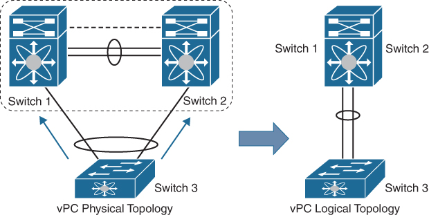

生成树协议¶
本文的内容已经整合到知识库中。
Spanning Tree Protocol¶
STP（Spanning Tree Protocol）可以在 802.1D-1998 第 8 章中找到。STP 协议工作在交换机上，需要根据交换机连接的拓扑，自动计算出一个生成树，并且把不在生成树上的边禁用，这样即使连接的拓扑有环路，禁用以后就没有环了。有了 STP 以后，连接交换机的时候就可以刻意连成环，从而提供冗余。
在 STP 协议提出的时候，网络还不像现在这样以点对点为主，因此需要考虑共享介质的场景，也就是多个交换机连到同一个局域网，并且这个局域网通过 Hub 来共享介质。因此，实际上局域网也属于拓扑的一部分，对应生成树的一个结点。为了统一点对点和共享介质，不妨认为点对点连接中，也连接了一个共享介质的局域网，只不过这个局域网没有其他网络设备。这样设定以后，从网络拓扑上来看，就是很多个独立的局域网，用交换机连接起来。
STP 协议工作的第一步是选举出一个 Root Bridge，也就是生成树的根结点。为了保证选举出唯一的 Root Bridge，选择的标准是，找到最小的 Bridge ID，ID 由人为设定的优先级以及 MAC 地址组成。由于 MAC 地址是唯一的，所以 Bridge ID 也是唯一的，因此一定可以找到一个最小的 ID，那么它就是 Root Bridge。
实际工作的时候，交换机会收发 BPDU，并且把其他交换机发给自己的 Root ID 和自己的 ID 进行比较：如果自己的 ID 比别人发的 Root ID 都小，那么自己是 Root；如果别人发的 Root ID 比自己小，那自己肯定不是 Root。经过一段时间，拥有最小 ID 的 Bridge 信息会逐渐传播到整个网络，最后所有交换机都会对 Root Bridge 达成共识。
确定好 Root Bridge 之后，接下来就是得到生成树。每个交换机会接收相邻交换机发送的 BPDU，得知相邻交换机到 Root Bridge 的距离，然后像路由协议那样，计算出走从哪个 Port 走到达 Root Bridge 的距离最短，就把这个 Port 标记为 Root Port，意思是沿着这个方向走，就会一跳一跳地到达 Root Bridge。同时也会更新自己到 Root Bridge 的距离，发给相邻的交换机。这些 Root Port 的方向就对应了生成树里面的父亲节点。
得到生成树以后，就知道如何禁用不在生成树的边了：如果在某个非 Root 端口上监听到了其他交换机发送的 BPDU，那就说明交换机在这个端口方向上存在一条不在生成树上的边。但是，这条边上有一个局域网（前面提到，即使是交换机之间点对点连接，也可以认为有一个没有网络设备的局域网在中间），这个局域网依然需要能够访问其他局域网。因此，连接到同一个局域网的多个交换机，需要选择出一个交换机，负责这个局域网的所有流量，也就是 Designated Bridge。Designated Bridge 连向局域网的 Port 就是 Designated Port。而连接到局域网的非 Designated Bridge，就需要禁用端口，不收不发数据，只处理 BPDU，此时就是 Block Port。
因此，从交换机的视角，如果是 Root Bridge，看到的就是若干个 Designated Port；如果不是 Root Bridge，那么会看到一个 Root Port，若干个 Designated Port，可能还有 Blocked Port。
需要区分两个概念：Role 和 State。每个交换机在每个 Port 上，都有一个 Role 和一个 State：
- Role：Root，Designated，Blocked
- State：Disabled，Blocking，Listening，Learning，Forwarding
Role 指的是端口的属性，用于 STP 内部：
- Root：连向 Root 的最短路径的方向
- Designated：负责转发局域网流量
- Blocked：出现了环导致不能转发
State 指的是端口的状态，可以认为是 STP 的输出，把端口设置为对应的状态：
- Blocking：不转发以太网帧
- Listening：不转发以太网帧，但是收发 BPDU
- Learning：在 Listening 的基础上，监听流量，学习 MAC 地址，添加到转发表
- Forwarding：正常工作
- Disabled：被管理员禁用
小结一下 STP 的工作流程：
- 选举出 Root Bridge
- 对于每个 LAN Segment，选举出 Designated Switch
- 把不在生成树上的端口设置为 Blocking
Rapid Spanning Tree Protocol¶
RSTP（Rapid Spanning Tree Protocol）是 STP 协议的升级，在 802.1D-2004 标准中定义。
和 STP 不同，RSTP 定义了五个 Role：
- Root：连向 Root 的最短路径的方向
- Designated：负责转发局域网流量
- Alternate：连向 Root 的另一条路径的方向
- Backup：已经有另一个交换机连接的局域网方向
- Disabled：被管理员禁用
除了 Disabled 以外，RSTP 和 STP 的区别在于，RSTP 把 Blocked 改成了 Alternate 和 Backup：
- Alternate 作为 Root 的备份：记录交换机到 Root 的第二条路径，当 Root Port 出问题了，那么 Alternate Port 可以成为新的 Root Port
- Backup 作为 Designated 的备份：连接的局域网有别的 Designated Bridge，如果 Designated Bridge 出问题了，自己可以成为新的 Designated Bridge
这样的好处是，如果 Root Port 出问题了，可以及时切换到别的路径上，提高收敛速度。
相比 STP，RSTP 把 State 简化成了三个：
- Discarding：不转发以太网帧，对应 STP 的 Blocking 和 Listening
- Learning：不转发以太网帧，学习 MAC 地址
- Forwarding：正常工作
VLAN¶
STP 和 RSTP 都没有考虑 VLAN，只考虑了交换机的拓扑。但实际上，每个 VLAN 可能是不同的一个拓扑，可能只有部分交换机参与到特定的 VLAN 中，这时候就希望可以做一个 Per VLAN 的 STP。
Per VLAN 的 STP 相关协议有：
- STP + VLAN: Per-VLAN Spanning Tree(PVST/PVST+) by Cisco
- RSTP + VLAN: Rapid Per-VLAN Spanning Tree(Rapid PVST/Rapid PVST+) by Cisco
- RSTP + VLAN: Vlan-based Spanning Tree(VBST) by Huawei
根据文档，VBST 和 Rapid PVST 是兼容的，虽然名字不同，但大概率是一样的协议。
此外还有 Multiple Spanning Tree Protocol(MSTP)，定义在 IEEE 802.1s-2002 标准中，它并不是 Per-VLAN Spanning Tree，而支持跨 VLAN 的生成树计算。
下面是在不同型号的交换机上观察到支持的协议：
- Dell: stp pvst rstp rapid-pvst mstp
- Huawei: stp rstp mstp vbst
- Mellanox: rst mst rpvst
- Cisco: mst rapid-pvst
实践中，可以使用 rapid-pvst/vbst/rpvst 的配置。
STP Port Type¶
在交换机设置中，经常可以看到对 STP Port Type 的支持：
- Edge：仅主机
- Network：仅交换机
- Normal：自适应
STP 协议在工作的时候，为了防止协议初始化过程中引入了不必要的环路，初始化时是不转发流量的。那么，如果事先知道端口连接的只有主机，没有交换机，就可以跳过这个过程，直接开始进入 Forwarding 状态，此时就可以设置为 Edge 模式。在 Edge 模式下，交换机不会发送 BPDU。
如果事先知道连接的是交换机，可以选择 Network，但是需要注意的是，Cisco 实现了 Bridge Assurance，也就是说，如果设置为 Network 模式，必须要求对方也设置为 Network 模式，否则就不会工作。
普适的方法是设置为 Normal，此时就会按照正常的方法来初始化。
BPDU Filter¶
BPDU Filter 顾名思义，在特定端口上禁用 STP 协议：不发送 BPDU，收到的 BPDU 都忽略，可以用来限制 STP 工作的范围。
Virtual Port Channel (vPC)¶
STP 解决了环路的问题，使得网络管理员在设计拓扑的时候，可以添加更多边来提供冗余。但是，STP 的工作原理决定了，冗余链路平时是被禁用的，不会走流量。是否有办法，在提供冗余的同时，又能够利用上冗余链路的带宽？
针对这个场景，厂商提供了不同的解决方案，这里以 Cisco 的 vPC 作为一个例子来介绍。vPC 就是虚拟的 Port Channel 的意思，Port Channel 就是链路聚合，把两个交换机之间的多条链路当成一个用；Virtual Port Channel(vPC) 则是把 Port Channel 扩展到了跨交换机，二对一，一部分链路连到 Switch 1，剩下的链路连到 Switch 2，但是从外面看过来，等价于只有一个交换机：

这样就实现了对冗余链路的利用。
在 vPC 的 Peer Switch 模式下，为了让 Switch 3 看到的只是一个交换机，它把 Switch 1 和 Switch 2 伪装成同一个交换机：STP 的 Bridge ID 相同，在 STP 协议中看起来到就是一个 Root Bridge。
在 Dell 和 Mellanox 交换机中，类似的功能叫做 MLAG(Multi-switch LAG/Multi-chassis LAG)。